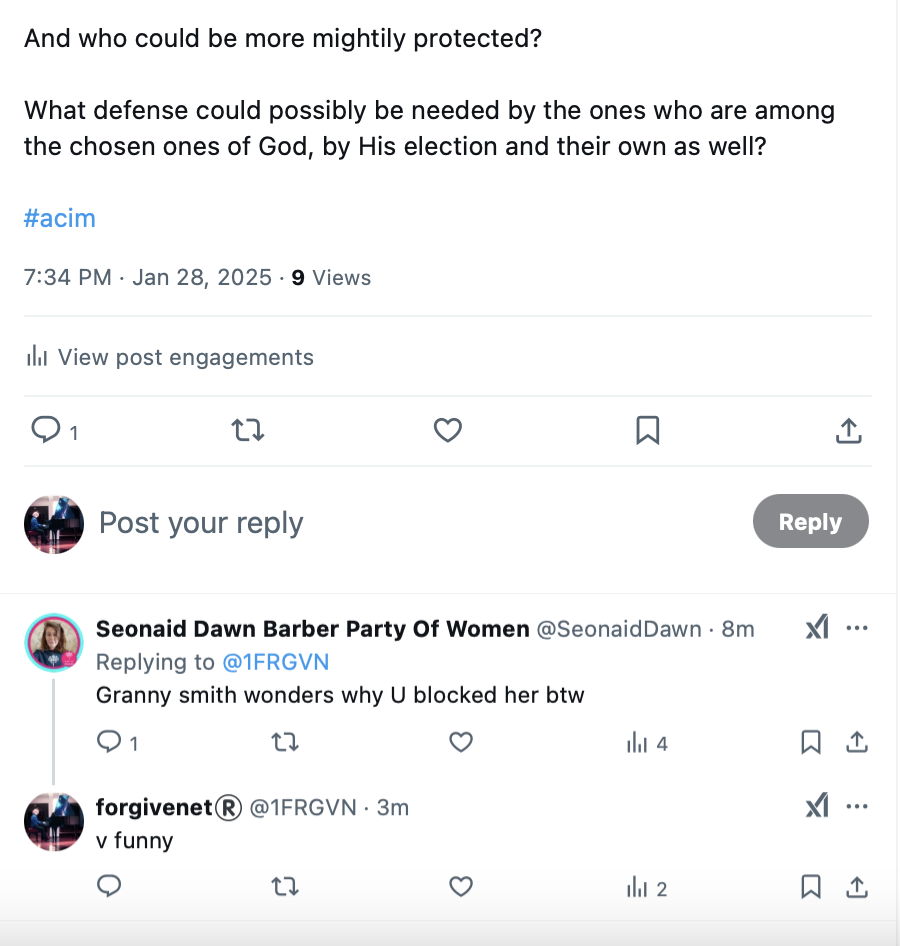
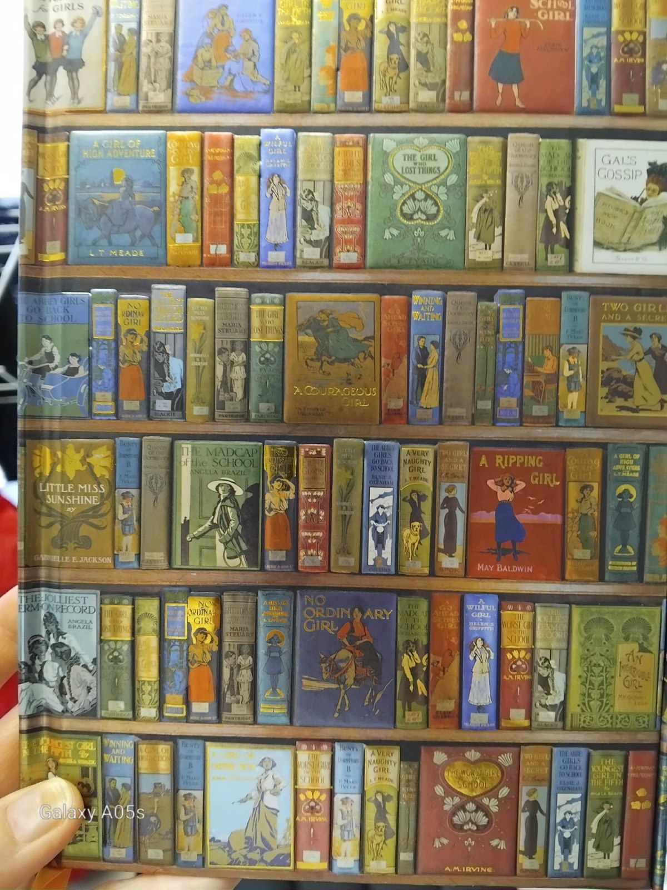

Here are a few examples of emails I wrote to the police in the UK, Baroness Nicholson, and the British press in 2024-2025 asking for help.
Lauren Ott was one of the investigating officers from 2015 who looked into my complaint against Winston May and the North London rape-gangs - all pertaining communications being read online by British and Spanish criminal gangs who had hacked me since at least 2003.
How pissed I am!
Asking for help
Deleted commit content
Inma still tries to contact me regularly
@LucyInBetween being one such account.
@AllyBrisket… could this account be run by Winston May himself? Seems likely.